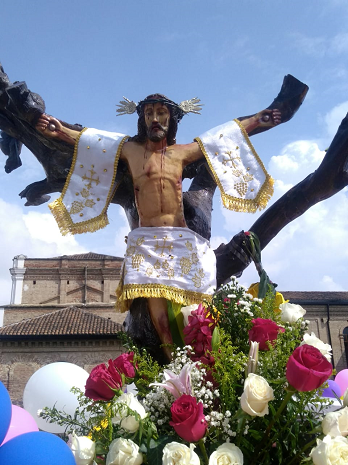

Esta es una escultura tallada en un árbol de Casanto y según varias versiones tiene más de
250 años de antigüedad. Se encuentra resguardada en el atrio de la Iglesia Nuestra Señora de
Asunción de Alóag

Fiestas Nuestra Señora de la Asunción (15 de agosto)